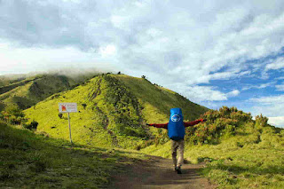
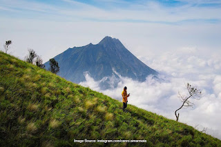
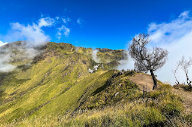
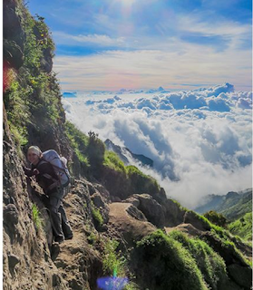
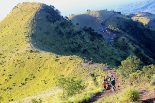

JALUR PENDAKIAN
Berikut adalah jalur resmi menuju puncak Gunung Merbabu:
1. Jalur Selo
Jalur ini merupakan yang paling populer dan banyak digunakan pendaki karna sudah ada sejak lama. Basecamp Selo terletak di Desa Selo, Boyolali. Jalur ini relatif lebih mudah dan cepat mencapai puncak, dengan pemandangan sabana yang luas. Meskipun demikian, para pendaki juga tetap perlu berhati-hati saat melalui jalur ini, karena perjalanannya cukup curam dan mempunyai banyak tantangan.

2. Jalur Suwanting
Salah satu jalur pendakian Gunung Merbabu yang cukup ekstrem dan mempunyai pemandangan eksotis adalah jalur Suwanting. Jalur yang berada di Magelang ini bisa menjadi salah satu pertimbangan para pemula, karena rutenya cenderung landai meskipun jarak tempuhnya panjang. Di samping itu, jalur ini mempunyai pemandangan indah, mulai dari hutan tropis, hingga aliran air sungai yang menyegarkan. Cocok untuk pendaki yang ingin menguji stamina dan menikmati pemandangan yang berbeda.

3. Jalur Thekelan
Jalur Thekelan juga termasuk sebagai jalur pendakian Gunung Merbabu tertua yang ada di Semarang. Rute ini akan menawarkan suasana yang lebih sepi dan asri. Cocok untuk pendaki yang mencari ketenangan dan ingin menikmati keindahan alam yang tenang. Rute jalur ini akan bersatu dengan jalur Wekas serta Cunthel. Ada spot Watu Gubug yang populer di kalangan para pendaki. Kamu juga perlu berhati-hati saat melewati jalur ini, karena tanjakannya terbilang terjal.

4. Jalur Wekas
Jalur Wekas juga termasuk rute pendakian Gunung Merbabu yang berada di Magelang. Jalur ini relatif lebih pendek dan cocok bagi pendaki yang ingin mencapai puncak dengan waktu lebih singkat. Namun, treknya cenderung lebih terjal. Walau begitu ada pula pendaki yang ingin berkemah, bisa melalui jalur ini. Pasalnya, di Pos II Jalur Wekas terdapat banyak sumber air dan memiliki pemandangan ini, sehingga banyak pendaki memutuskan untuk berkemah di kawasan ini.

5. Jalur Cuntel
Rute pendakian Gunung Merbabu yang terakhir adalah jalur Cunthel yang berada di Getasan, Semarang. Pada jalur ini, terdapat menara pemancar yang akan dijumpai para pendaki. Selain itu, rute pendakian ini juga tergolong tenang dan tidak sepopuler lainnya, sehingga jalurnya terkesan alami.
